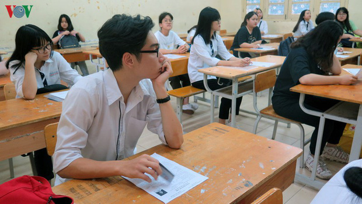

Đại học Quốc gia TP.HCM: Học phí dự kiến sẽ tăng vào năm sau
Update for renew o365(1) Từ năm 2021, các trường thành viên Đại học Quốc gia TP HCM gồm Đại học Bách khoa, Đại học Quốc tế, Đại học Kinh tế - Luật, Đại học Công nghệ thông tin dự kiến thu học phí 20,5-50 triệu đồng. Xem thêm
Những lưu ý khi ôn thi THPT quốc gia 2020
Năm nay, Bộ GD&ĐT không công bố đề thi minh họa cho kỳ thi THPT quốc gia. Thí sinh có thể tham khảo, ôn tập qua những tài liệu nào để có sự chuẩn bị tốt nhất? Xem thêm
Học sinh nghỉ học dài do Covid-19 nhưng “thi THPT Quốc gia vẫn đảm bảo“
Nhiều Sở GDĐT cho rằng, nếu đi học trước ngày 15/6, học sinh hoàn toàn có thể học đủ khối lượng và chất lượng kiến thức để tham gia kỳ thi THPT Quốc gia. Xem thêm
Đại học Đại Nam chính thức công bố Đề án tuyển sinh đại học chính quy năm 2020
Năm học 2020-2021, Trường Đại học Đại Nam xét tuyển 1.820 chỉ tiêu ở 16 ngành học thuộc 4 khối đào tạo, gồm: Sức khỏe, kỹ thuật, kinh tế và khoa học xã hội – nhân văn theo hai phương thức xét tuyển. Xem thêm
Tài chính du học - Bao nhiêu là đủ?
Theo Ella Study, bạn cần xây dựng 7 nhóm chi phí cơ bản, từ đó lên kế hoạch làm sao đảm bảo ngân sách du học. Xem thêm